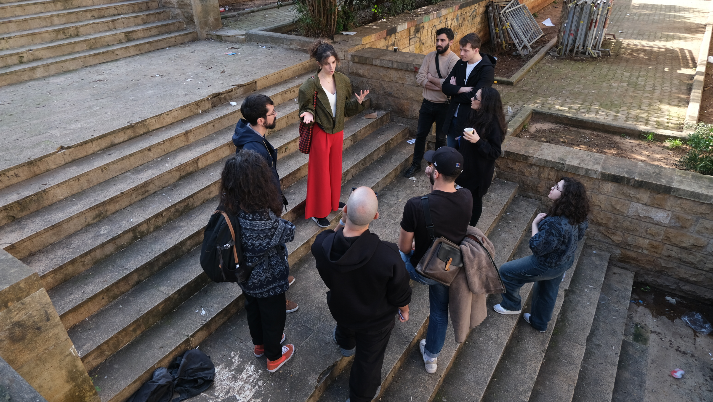
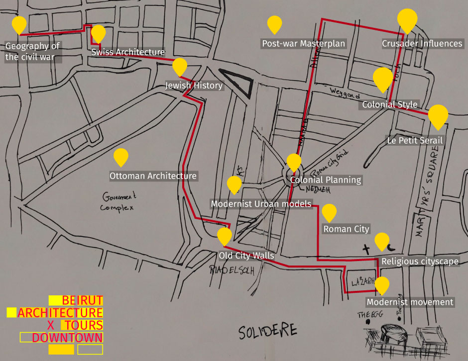
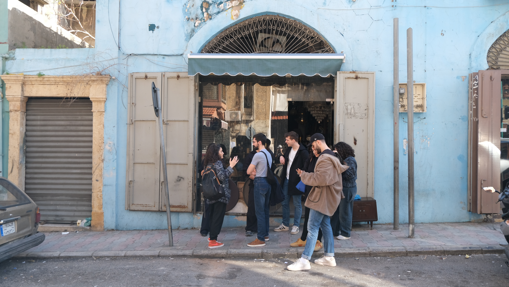
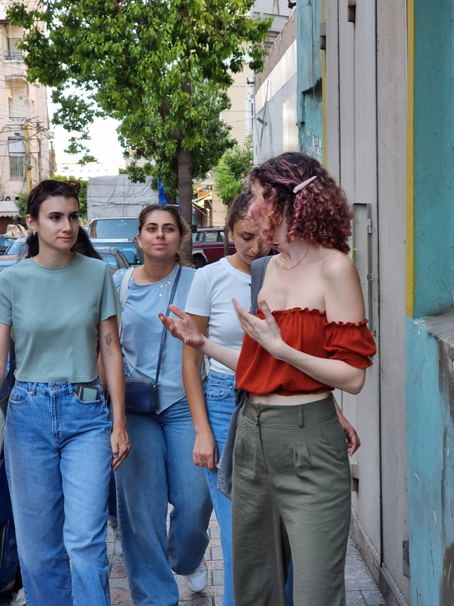
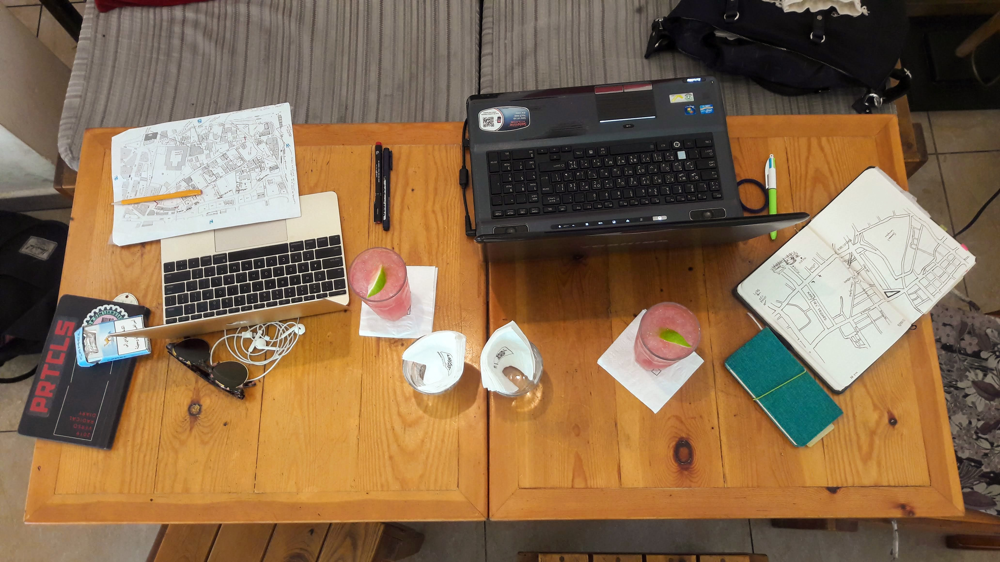

About Jana
Jana is an architect and urban researcher engaging in topics of national urban planning practices, housing policies and displacement, urban transformation, and history.
Masarat
“Space is not a scientific object removed from ideology or politics.
Antiques Tour
A tour of Bachoura and Basta’s Antique Market
Collab
A Tool for Research: The Potential of Walking Tours with Molly T.
Activities
Touring Downtown Beirut with the visiting student from MAS Urban Design program at ETH Zurich.